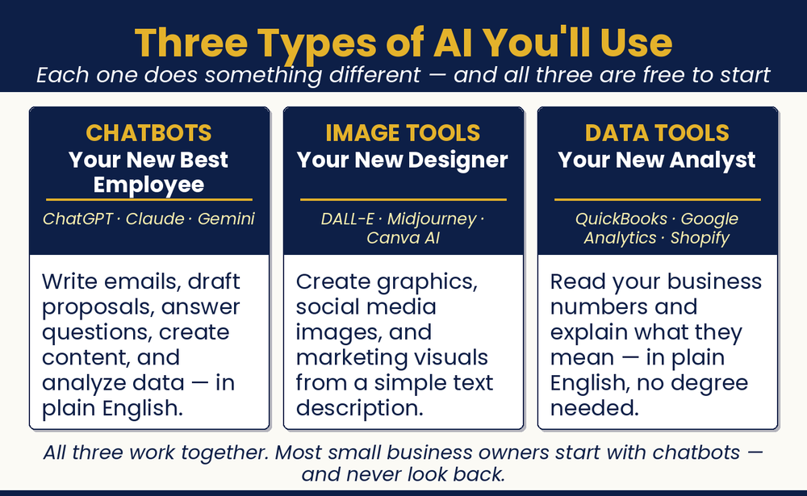

Chapter 2: How AI Levels the Playing Field
It’s Simpler Than You Think
What is this lever, and how do I pull it?

Chapter Recap
Forget the sci-fi robots and the jargon. AI is just a tool that reads, writes, and answers in plain language. You already use it more than you think. Spam filters, map reroutes, and autocomplete are all AI. This chapter explains AI in simple terms. It covers the four main tools and what each one does well. It also shows what AI cannot do, so you know where it fits in your business.
In This Chapter
- AI in Plain English
- You’re No Beginner
- A Simple Model
- The Four AI Tools in the Headlines
- Two More Utilities You Should Know About
- What Can’t AI Do?
- What This Means for You
Download
- 📄 Four AI Tools Quick-Start Guide: direct links and a one-page quick start for ChatGPT, Claude, Gemini, and Grok.
Your Move
Open ChatGPT or Claude right now. It takes two minutes to create a free account at chatgpt.com or claude.ai. Once you’re in, type this: “I run a [describe your business]. What is one thing AI could help me do faster this week?” Read the answer. You just had your first real AI conversation. That’s the hardest part done.

Read the full chapter in
AI Jiu-Jitsu: Run Circles Around the Big Guys, the book this toolbox comes from.
Prefer to have it set up for you? BreakThru Growth offers AI coaching and done-for-you setup for small businesses → BreakThruGrowth.com